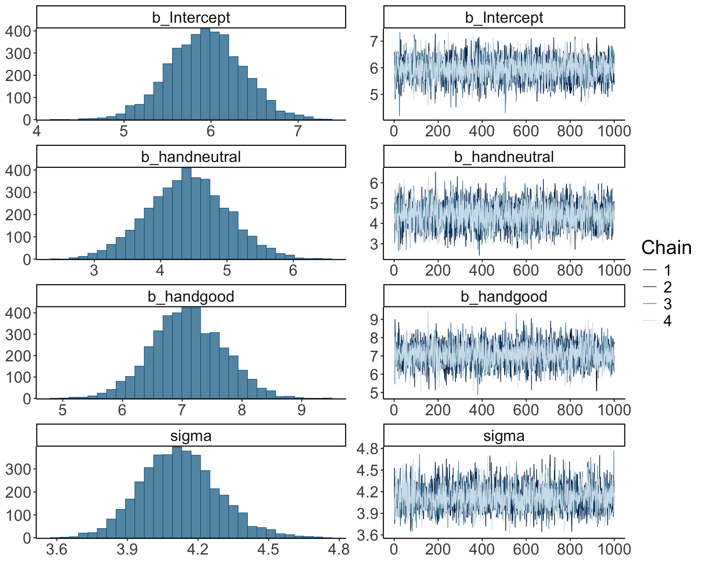
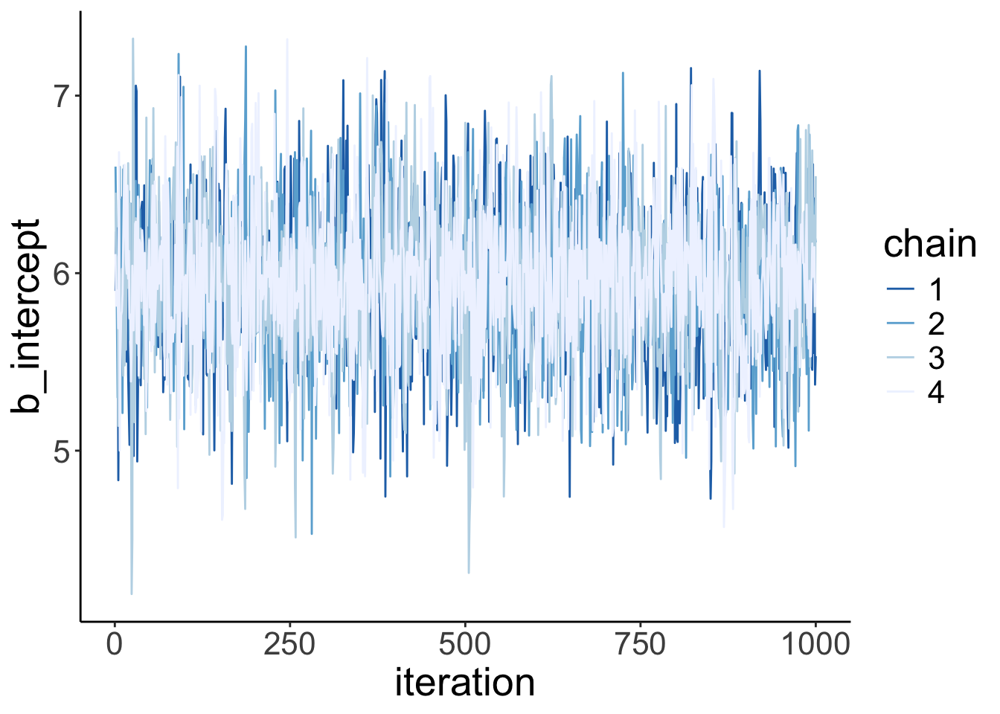
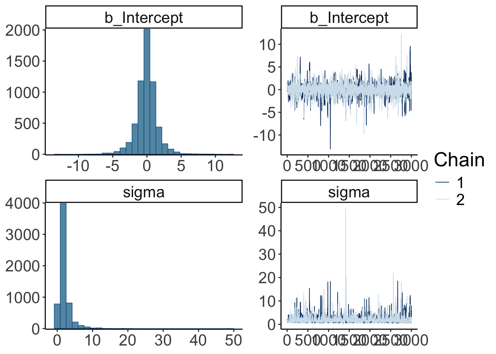
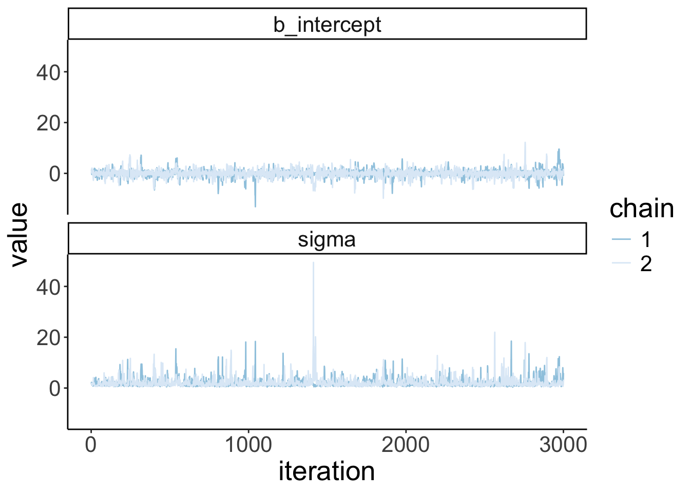
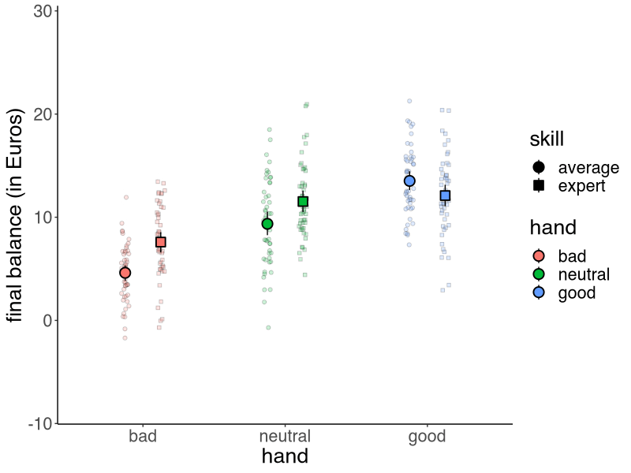
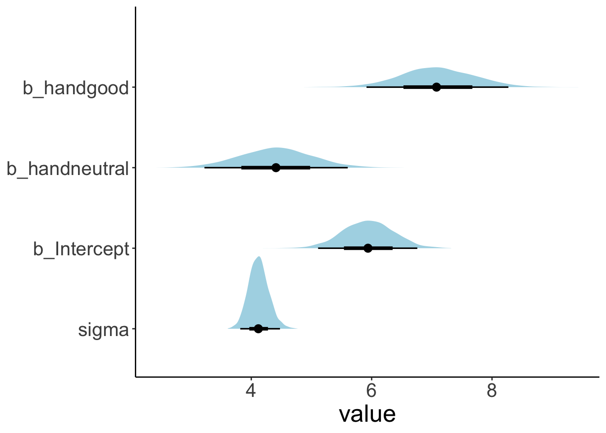
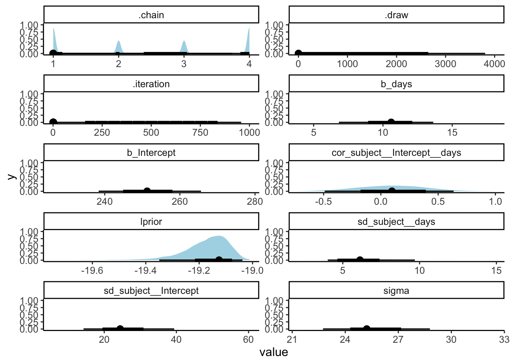
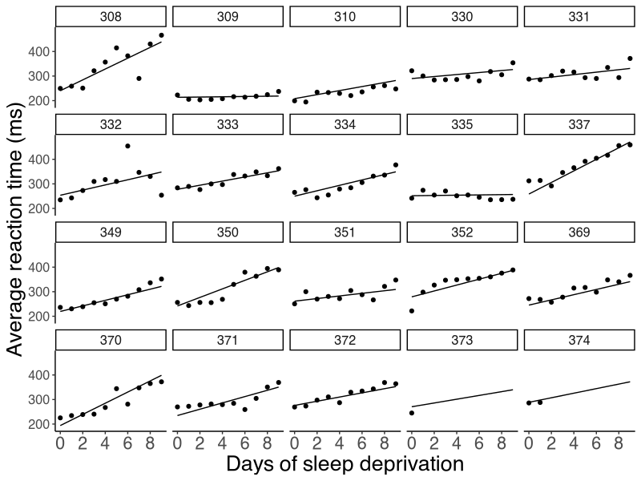

Chapter 23 Bayesian data analysis 2
23.1 Learning goals
- Building Bayesian models with
brms.- Model evaluation:
- Visualizing and interpreting results.
- Testing hypotheses.
- Inference evaluation: Did things work out?
- Model evaluation:
23.2 Load packages and set plotting theme
library("knitr") # for knitting RMarkdown
library("kableExtra") # for making nice tables
library("janitor") # for cleaning column names
library("tidybayes") # tidying up results from Bayesian models
library("brms") # Bayesian regression models with Stan
library("patchwork") # for making figure panels
library("GGally") # for pairs plot
library("broom.mixed") # for tidy lmer results
library("bayesplot") # for visualization of Bayesian model fits
library("modelr") # for modeling functions
library("lme4") # for linear mixed effects models
library("afex") # for ANOVAs
library("car") # for ANOVAs
library("emmeans") # for linear contrasts
library("ggeffects") # for help with logistic regressions
library("titanic") # titanic dataset
library("gganimate") # for animations
library("parameters") # for getting parameters
library("transformr") # for gganimate
# install via: devtools::install_github("thomasp85/transformr")
library("tidyverse") # for wrangling, plotting, etc. theme_set(theme_classic() + # set the theme
theme(text = element_text(size = 20))) # set the default text size
opts_chunk$set(comment = "",
fig.show = "hold")
options(dplyr.summarise.inform = F)
# set default color scheme in ggplot
options(ggplot2.discrete.color = RColorBrewer::brewer.pal(9,"Set1"))23.3 Load data sets
# poker
df.poker = read_csv("data/poker.csv") %>%
mutate(skill = factor(skill,
levels = 1:2,
labels = c("expert", "average")),
skill = fct_relevel(skill, "average", "expert"),
hand = factor(hand,
levels = 1:3,
labels = c("bad", "neutral", "good")),
limit = factor(limit,
levels = 1:2,
labels = c("fixed", "none")),
participant = 1:n()) %>%
select(participant, everything())
# sleep
df.sleep = sleepstudy %>%
as_tibble() %>%
clean_names() %>%
mutate(subject = as.character(subject)) %>%
select(subject, days, reaction) %>%
bind_rows(tibble(subject = "374",
days = 0:1,
reaction = c(286, 288)),
tibble(subject = "373",
days = 0,
reaction = 245))
# titanic
df.titanic = titanic_train %>%
clean_names() %>%
mutate(sex = as.factor(sex))
# politeness
df.politeness = read_csv("data/politeness_data.csv") %>%
rename(pitch = frequency)23.4 Poker
23.4.1 1. Visualize the data
Let’s visualize the data first.
set.seed(1)
df.poker %>%
ggplot(mapping = aes(x = hand,
y = balance,
fill = hand,
group = skill,
shape = skill)) +
geom_point(alpha = 0.2,
position = position_jitterdodge(dodge.width = 0.5,
jitter.height = 0,
jitter.width = 0.2)) +
stat_summary(fun.data = "mean_cl_boot",
position = position_dodge(width = 0.5),
size = 1) +
labs(y = "final balance (in Euros)") +
scale_shape_manual(values = c(21, 22)) +
guides(fill = guide_legend(override.aes = list(shape = 21,
fill = RColorBrewer::brewer.pal(3, "Set1"))),
shape = guide_legend(override.aes = list(alpha = 1, fill = "black")))
23.4.2 2. Specify and fit the model
23.4.2.1 Frequentist model
And let’s now fit a simple (frequentist) ANOVA model. You have multiple options to do so:
# Option 1: Using the "afex" package
aov_ez(id = "participant",
dv = "balance",
between = c("hand", "skill"),
data = df.poker)Contrasts set to contr.sum for the following variables: hand, skillAnova Table (Type 3 tests)
Response: balance
Effect df MSE F ges p.value
1 hand 2, 294 16.16 79.17 *** .350 <.001
2 skill 1, 294 16.16 2.43 .008 .120
3 hand:skill 2, 294 16.16 7.08 *** .046 <.001
---
Signif. codes: 0 '***' 0.001 '**' 0.01 '*' 0.05 '+' 0.1 ' ' 1# Option 2: Using the car package (here we have to remember to set the contrasts to sum
# contrasts!)
lm(balance ~ hand * skill,
contrasts = list(hand = "contr.sum",
skill = "contr.sum"),
data = df.poker) %>%
car::Anova(type = 3)Anova Table (Type III tests)
Response: balance
Sum Sq Df F value Pr(>F)
(Intercept) 28644.7 1 1772.1137 < 2.2e-16 ***
hand 2559.4 2 79.1692 < 2.2e-16 ***
skill 39.3 1 2.4344 0.1197776
hand:skill 229.0 2 7.0830 0.0009901 ***
Residuals 4752.3 294
---
Signif. codes: 0 '***' 0.001 '**' 0.01 '*' 0.05 '.' 0.1 ' ' 1# Option 3: Using the emmeans package (I like this one the best! It let's us use the
# general lm() syntax and we don't have to remember to set the contrast)
fit.lm_poker = lm(balance ~ hand * skill,
data = df.poker)
fit.lm_poker %>%
joint_tests() model term df1 df2 F.ratio p.value
hand 2 294 79.169 <.0001
skill 1 294 2.434 0.1198
hand:skill 2 294 7.083 0.0010All three options give the same result. Personally, I like Option 3 the best.
23.4.2.2 Bayesian model
Now, let’s fit a Bayesian regression model using the brm() function (starting with a simple model that only considers hand as a predictor):
fit.brm_poker = brm(formula = balance ~ 1 + hand,
data = df.poker,
seed = 1,
file = "cache/brm_poker")
# we'll use this model here later
fit.brm_poker2 = brm(formula = balance ~ 1 + hand * skill,
data = df.poker,
seed = 1,
file = "cache/brm_poker2")
fit.brm_poker %>%
summary() Family: gaussian
Links: mu = identity; sigma = identity
Formula: balance ~ 1 + hand
Data: df.poker (Number of observations: 300)
Draws: 4 chains, each with iter = 2000; warmup = 1000; thin = 1;
total post-warmup draws = 4000
Population-Level Effects:
Estimate Est.Error l-95% CI u-95% CI Rhat Bulk_ESS Tail_ESS
Intercept 5.94 0.41 5.10 6.73 1.00 3385 2517
handneutral 4.40 0.58 3.28 5.59 1.00 3607 2612
handgood 7.08 0.59 5.94 8.23 1.00 3719 2923
Family Specific Parameters:
Estimate Est.Error l-95% CI u-95% CI Rhat Bulk_ESS Tail_ESS
sigma 4.12 0.17 3.80 4.48 1.00 3893 3019
Draws were sampled using sampling(NUTS). For each parameter, Bulk_ESS
and Tail_ESS are effective sample size measures, and Rhat is the potential
scale reduction factor on split chains (at convergence, Rhat = 1).I use the file = argument to save the model’s results so that when I run this code chunk again, the model doesn’t need to be fit again (fitting Bayesian models takes a while …). And I used the seed = argument to make this example reproducible.
23.4.2.2.1 Full specification
So far, we have used the defaults that brm() comes with and not bothered about specifiying the priors, etc.
Notice that we didn’t specify any priors in the model. By default, “brms” assigns weakly informative priors to the parameters in the model. We can see what these are by running the following command:
fit.brm_poker %>%
prior_summary() prior class coef group resp dpar nlpar lb ub
(flat) b
(flat) b handgood
(flat) b handneutral
student_t(3, 9.5, 5.6) Intercept
student_t(3, 0, 5.6) sigma 0
source
default
(vectorized)
(vectorized)
default
defaultWe can also get information about which priors need to be specified before fitting a model:
get_prior(formula = balance ~ 1 + hand,
family = "gaussian",
data = df.poker) prior class coef group resp dpar nlpar lb ub
(flat) b
(flat) b handgood
(flat) b handneutral
student_t(3, 9.5, 5.6) Intercept
student_t(3, 0, 5.6) sigma 0
source
default
(vectorized)
(vectorized)
default
defaultHere is an example for what a more complete model specification could look like:
fit.brm_poker_full = brm(formula = balance ~ 1 + hand,
family = "gaussian",
data = df.poker,
prior = c(prior(normal(0, 10),
class = "b",
coef = "handgood"),
prior(normal(0, 10),
class = "b",
coef = "handneutral"),
prior(student_t(3, 3, 10),
class = "Intercept"),
prior(student_t(3, 0, 10),
class = "sigma")),
inits = list(list(Intercept = 0,
sigma = 1,
handgood = 5,
handneutral = 5),
list(Intercept = -5,
sigma = 3,
handgood = 2,
handneutral = 2),
list(Intercept = 2,
sigma = 1,
handgood = -1,
handneutral = 1),
list(Intercept = 1,
sigma = 2,
handgood = 2,
handneutral = -2)),
iter = 4000,
warmup = 1000,
chains = 4,
file = "cache/brm_poker_full",
seed = 1)
fit.brm_poker_full %>%
summary() Family: gaussian
Links: mu = identity; sigma = identity
Formula: balance ~ 1 + hand
Data: df.poker (Number of observations: 300)
Draws: 4 chains, each with iter = 4000; warmup = 1000; thin = 1;
total post-warmup draws = 12000
Population-Level Effects:
Estimate Est.Error l-95% CI u-95% CI Rhat Bulk_ESS Tail_ESS
Intercept 5.96 0.41 5.17 6.78 1.00 9472 7929
handneutral 4.37 0.59 3.21 5.49 1.00 10221 9046
handgood 7.05 0.59 5.89 8.20 1.00 10521 8934
Family Specific Parameters:
Estimate Est.Error l-95% CI u-95% CI Rhat Bulk_ESS Tail_ESS
sigma 4.13 0.17 3.81 4.47 1.00 10744 8408
Draws were sampled using sampling(NUTS). For each parameter, Bulk_ESS
and Tail_ESS are effective sample size measures, and Rhat is the potential
scale reduction factor on split chains (at convergence, Rhat = 1).We can also take a look at the Stan code that the brm() function creates:
fit.brm_poker_full %>%
stancode()// generated with brms 2.14.4
functions {
}
data {
int<lower=1> N; // total number of observations
vector[N] Y; // response variable
int<lower=1> K; // number of population-level effects
matrix[N, K] X; // population-level design matrix
int prior_only; // should the likelihood be ignored?
}
transformed data {
int Kc = K - 1;
matrix[N, Kc] Xc; // centered version of X without an intercept
vector[Kc] means_X; // column means of X before centering
for (i in 2:K) {
means_X[i - 1] = mean(X[, i]);
Xc[, i - 1] = X[, i] - means_X[i - 1];
}
}
parameters {
vector[Kc] b; // population-level effects
real Intercept; // temporary intercept for centered predictors
real<lower=0> sigma; // residual SD
}
transformed parameters {
}
model {
// likelihood including all constants
if (!prior_only) {
target += normal_id_glm_lpdf(Y | Xc, Intercept, b, sigma);
}
// priors including all constants
target += normal_lpdf(b[1] | 0, 10);
target += normal_lpdf(b[2] | 0, 10);
target += student_t_lpdf(Intercept | 3, 3, 10);
target += student_t_lpdf(sigma | 3, 0, 10)
- 1 * student_t_lccdf(0 | 3, 0, 10);
}
generated quantities {
// actual population-level intercept
real b_Intercept = Intercept - dot_product(means_X, b);
}One thing worth noticing: by default, “brms” centers the predictors which makes it easier to assign a default prior over the intercept.
23.4.3 3. Model evaluation
23.4.3.1 a) Did the inference work?
So far, we’ve assumed that the inference has worked out. We can check this by running plot() on our brm object:
plot(fit.brm_poker,
N = 7,
ask = F)
The posterior distributions (left hand side), and the trace plots of the samples from the posterior (right hand side) look good.
Let’s make our own version of a trace plot for one parameter in the model:
fit.brm_poker %>%
spread_draws(b_Intercept) %>%
clean_names() %>%
mutate(chain = as.factor(chain)) %>%
ggplot(aes(x = iteration,
y = b_intercept,
group = chain,
color = chain)) +
geom_line() +
scale_color_brewer(type = "seq",
direction = -1)
We can also take a look at the auto-correlation plot. Ideally, we want to generate independent samples from the posterior. So we don’t want subsequent samples to be strongly correlated with each other. Let’s take a look:
variables = fit.brm_poker %>%
get_variables() %>%
.[1:4]
fit.brm_poker %>%
posterior_samples() %>%
mcmc_acf(pars = variables,
lags = 4)Warning: Method 'posterior_samples' is deprecated. Please see ?as_draws for
recommended alternatives.
Looking good! The autocorrelation should become very small as the lag increases (indicating that we are getting independent samples from the posterior).
23.4.3.1.0.1 When things go wrong
Let’s try to fit a model to very little data (just two observations) with extremely uninformative priors:
df.data = tibble(y = c(-1, 1))
fit.brm_wrong = brm(data = df.data,
family = gaussian,
formula = y ~ 1,
prior = c(prior(uniform(-1e10, 1e10), class = Intercept),
prior(uniform(0, 1e10), class = sigma)),
inits = list(list(Intercept = 0, sigma = 1),
list(Intercept = 0, sigma = 1)),
iter = 4000,
warmup = 1000,
chains = 2,
file = "cache/brm_wrong")Let’s take a look at the posterior distributions of the model parameters:
summary(fit.brm_wrong)Warning: Parts of the model have not converged (some Rhats are > 1.05). Be
careful when analysing the results! We recommend running more iterations and/or
setting stronger priors.Warning: There were 1348 divergent transitions after warmup.
Increasing adapt_delta above 0.8 may help. See http://mc-stan.org/misc/
warnings.html#divergent-transitions-after-warmup Family: gaussian
Links: mu = identity; sigma = identity
Formula: y ~ 1
Data: df.data (Number of observations: 2)
Draws: 2 chains, each with iter = 4000; warmup = 1000; thin = 1;
total post-warmup draws = 6000
Population-Level Effects:
Estimate Est.Error l-95% CI u-95% CI Rhat Bulk_ESS
Intercept -44780254.01 1085496757.06 -3091150221.00 2498148317.09 1.73 218
Tail_ESS
Intercept 113
Family Specific Parameters:
Estimate Est.Error l-95% CI u-95% CI Rhat Bulk_ESS Tail_ESS
sigma 924899544.31 1859482970.46 22790.00 6962912540.71 1.69 3 64
Draws were sampled using sampling(NUTS). For each parameter, Bulk_ESS
and Tail_ESS are effective sample size measures, and Rhat is the potential
scale reduction factor on split chains (at convergence, Rhat = 1).Not looking good – The estimates and credible intervals are off the charts. And the effective samples sizes in the chains are very small.
Let’s visualize the trace plots:
plot(fit.brm_wrong,
N = 2,
ask = F)
fit.brm_wrong %>%
spread_draws(b_Intercept) %>%
clean_names() %>%
mutate(chain = as.factor(chain)) %>%
ggplot(aes(x = iteration,
y = b_intercept,
group = chain,
color = chain)) +
geom_line() +
scale_color_brewer(direction = -1)
Given that we have so little data in this case, we need to help the model a little bit by providing some slighlty more specific priors.
fit.brm_right = brm(data = df.data,
family = gaussian,
formula = y ~ 1,
prior = c(prior(normal(0, 10), class = Intercept), # more reasonable priors
prior(cauchy(0, 1), class = sigma)),
iter = 4000,
warmup = 1000,
chains = 2,
seed = 1,
file = "cache/brm_right")Let’s take a look at the posterior distributions of the model parameters:
summary(fit.brm_right) Family: gaussian
Links: mu = identity; sigma = identity
Formula: y ~ 1
Data: df.data (Number of observations: 2)
Draws: 2 chains, each with iter = 4000; warmup = 1000; thin = 1;
total post-warmup draws = 6000
Population-Level Effects:
Estimate Est.Error l-95% CI u-95% CI Rhat Bulk_ESS Tail_ESS
Intercept -0.03 1.72 -3.62 3.50 1.00 1240 1015
Family Specific Parameters:
Estimate Est.Error l-95% CI u-95% CI Rhat Bulk_ESS Tail_ESS
sigma 2.07 2.03 0.59 6.69 1.00 1180 1608
Draws were sampled using sampling(NUTS). For each parameter, Bulk_ESS
and Tail_ESS are effective sample size measures, and Rhat is the potential
scale reduction factor on split chains (at convergence, Rhat = 1).This looks much better. There is still quite a bit of uncertainty in our paremeter estimates, but it has reduced dramatically.
Let’s visualize the trace plots:
plot(fit.brm_right,
N = 2,
ask = F)
fit.brm_right %>%
spread_draws(b_Intercept, sigma) %>%
clean_names() %>%
mutate(chain = as.factor(chain)) %>%
pivot_longer(cols = c(b_intercept, sigma)) %>%
ggplot(aes(x = iteration,
y = value,
group = chain,
color = chain)) +
geom_line() +
facet_wrap(vars(name), ncol = 1) +
scale_color_brewer(direction = -1)
Looking mostly good!
23.4.3.2 b) Visualize model predictions
23.4.3.2.1 Posterior predictive check
To check whether the model did a good job capturing the data, we can simulate what future data the Bayesian model predicts, now that it has learned from the data we feed into it.
pp_check(fit.brm_poker, nsamples = 100)Warning: Argument 'nsamples' is deprecated. Please use argument 'ndraws'
instead.
This looks good! The predicted shaped of the data based on samples from the posterior distribution looks very similar to the shape of the actual data.
Let’s make a hypothetical outcome plot that shows what concrete data sets the model would predict. The add_predicted_draws() function from the “tidybayes” package is helpful for generating predictions from the posterior.
df.predictive_samples = df.poker %>%
add_predicted_draws(newdata = .,
object = fit.brm_poker2,
ndraws = 10)
p = ggplot(data = df.predictive_samples,
mapping = aes(x = hand,
y = .prediction,
fill = hand,
group = skill,
shape = skill)) +
geom_point(alpha = 0.2,
position = position_jitterdodge(dodge.width = 0.5,
jitter.height = 0,
jitter.width = 0.2)) +
stat_summary(fun.data = "mean_cl_boot",
position = position_dodge(width = 0.5),
size = 1) +
labs(y = "final balance (in Euros)") +
scale_shape_manual(values = c(21, 22)) +
guides(fill = guide_legend(override.aes = list(shape = 21)),
shape = guide_legend(override.aes = list(alpha = 1, fill = "black"))) +
transition_manual(.draw)
animate(p, nframes = 120, width = 800, height = 600, res = 96, type = "cairo")nframes and fps adjusted to match transitionRendering [========>-----------------------------------] at 6.6 fps ~ eta: 1s
Rendering [=============>--------------------------------] at 7 fps ~ eta: 1s
Rendering [=================>--------------------------] at 7.3 fps ~ eta: 1s
Rendering [=====================>----------------------] at 7.4 fps ~ eta: 1s
Rendering [=========================>------------------] at 7.5 fps ~ eta: 1s
Rendering [==============================>-------------] at 7.6 fps ~ eta: 0s
Rendering [==================================>---------] at 7.5 fps ~ eta: 0s
Rendering [=======================================>----] at 7.6 fps ~ eta: 0s
Rendering [============================================] at 7.7 fps ~ eta: 0s
23.4.3.2.2 Prior predictive check
fit.brm_poker_prior = brm(formula = balance ~ 0 + Intercept + hand * skill,
family = "gaussian",
data = df.poker,
prior = c(prior(normal(0, 10), class = "b"),
prior(student_t(3, 0, 10), class = "sigma")),
iter = 4000,
warmup = 1000,
chains = 4,
file = "cache/brm_poker_prior",
sample_prior = "only",
seed = 1)
# generate prior samples
df.prior_samples = df.poker %>%
add_predicted_draws(newdata = .,
object = fit.brm_poker_prior,
ndraws = 10)
# plot the results as an animation
p = ggplot(data = df.prior_samples,
mapping = aes(x = hand,
y = .prediction,
fill = hand,
group = skill,
shape = skill)) +
geom_point(alpha = 0.2,
position = position_jitterdodge(dodge.width = 0.5,
jitter.height = 0,
jitter.width = 0.2)) +
stat_summary(fun.data = "mean_cl_boot",
position = position_dodge(width = 0.5),
size = 1) +
labs(y = "final balance (in Euros)") +
scale_shape_manual(values = c(21, 22)) +
guides(fill = guide_legend(override.aes = list(shape = 21,
fill = RColorBrewer::brewer.pal(3, "Set1"))),
shape = guide_legend(override.aes = list(alpha = 1, fill = "black"))) +
transition_manual(.draw)
animate(p, nframes = 120, width = 800, height = 600, res = 96, type = "cairo")nframes and fps adjusted to match transitionRendering [========>-----------------------------------] at 7.5 fps ~ eta: 1s
Rendering [============>-------------------------------] at 7.5 fps ~ eta: 1s
Rendering [=================>--------------------------] at 7.3 fps ~ eta: 1s
Rendering [=====================>----------------------] at 7.2 fps ~ eta: 1s
Rendering [=========================>------------------] at 7.3 fps ~ eta: 1s
Rendering [==============================>-------------] at 7.2 fps ~ eta: 0s
Rendering [==================================>---------] at 7.2 fps ~ eta: 0s
Rendering [=======================================>----] at 7.2 fps ~ eta: 0s
Rendering [============================================] at 7.2 fps ~ eta: 0s# anim_save("poker_prior_predictive.gif")
23.4.4 4. Interpret the model parameters
23.4.4.1 Visualize the posteriors
Let’s visualize what the posterior for the different parameters looks like. We use the stat_halfeye() function from the “tidybayes” package to do so:
fit.brm_poker %>%
posterior_samples() %>%
clean_names() %>%
select(starts_with("b_"), sigma) %>%
pivot_longer(cols = everything(),
names_to = "variable",
values_to = "value") %>%
ggplot(data = .,
mapping = aes(y = fct_rev(variable),
x = value)) +
stat_halfeye(fill = "lightblue") +
theme(axis.title.y = element_blank())Warning: Method 'posterior_samples' is deprecated. Please see ?as_draws for
recommended alternatives.
23.4.4.2 Compute highest density intervals
To compute the MAP (maximum a posteriori probability) estimate and highest density interval, we use the mean_hdi() function that comes with the “tidybayes” package.
fit.brm_poker %>%
posterior_samples() %>%
clean_names() %>%
select(starts_with("b_"), sigma) %>%
mean_hdi() %>%
pivot_longer(cols = -c(.width:.interval),
names_to = "index",
values_to = "value") %>%
select(index, value) %>%
mutate(index = ifelse(str_detect(index, fixed(".")), index, str_c(index, ".mean"))) %>%
separate(index, into = c("parameter", "type"), sep = "\\.") %>%
pivot_wider(names_from = type,
values_from = value)Warning: Method 'posterior_samples' is deprecated. Please see ?as_draws for
recommended alternatives.# A tibble: 4 × 4
parameter mean lower upper
<chr> <dbl> <dbl> <dbl>
1 b_intercept 5.94 5.16 6.78
2 b_handneutral 4.40 3.24 5.52
3 b_handgood 7.08 5.92 8.20
4 sigma 4.12 3.79 4.4523.4.5 5. Test specific hypotheses
23.4.5.1 with hypothesis()
One key advantage of Bayesian over frequentist analysis is that we can test hypothesis in a very flexible manner by directly probing our posterior samples in different ways.
We may ask, for example, what the probability is that the parameter for the difference between a bad hand and a neutral hand (b_handneutral) is greater than 0. Let’s plot the posterior distribution together with the criterion:
fit.brm_poker %>%
posterior_samples() %>%
select(b_handneutral) %>%
pivot_longer(cols = everything(),
names_to = "variable",
values_to = "value") %>%
ggplot(data = .,
mapping = aes(y = variable, x = value)) +
stat_halfeye(fill = "lightblue") +
geom_vline(xintercept = 0,
color = "red")Warning: Method 'posterior_samples' is deprecated. Please see ?as_draws for
recommended alternatives.
We see that the posterior is definitely greater than 0.
We can ask many different kinds of questions about the data by doing basic arithmetic on our posterior samples. The hypothesis() function makes this even easier. Here are some examples:
# the probability that the posterior for handneutral is less than 0
hypothesis(fit.brm_poker,
hypothesis = "handneutral < 0")Hypothesis Tests for class b:
Hypothesis Estimate Est.Error CI.Lower CI.Upper Evid.Ratio Post.Prob
1 (handneutral) < 0 4.4 0.58 3.47 5.38 0 0
Star
1
---
'CI': 90%-CI for one-sided and 95%-CI for two-sided hypotheses.
'*': For one-sided hypotheses, the posterior probability exceeds 95%;
for two-sided hypotheses, the value tested against lies outside the 95%-CI.
Posterior probabilities of point hypotheses assume equal prior probabilities.# the probability that the posterior for handneutral is greater than 4
hypothesis(fit.brm_poker,
hypothesis = "handneutral > 4") %>%
plot()
# the probability that good hands make twice as much as bad hands
hypothesis(fit.brm_poker,
hypothesis = "Intercept + handgood > 2 * Intercept")Hypothesis Tests for class b:
Hypothesis Estimate Est.Error CI.Lower CI.Upper Evid.Ratio
1 (Intercept+handgo... > 0 1.14 0.92 -0.37 2.68 8.55
Post.Prob Star
1 0.9
---
'CI': 90%-CI for one-sided and 95%-CI for two-sided hypotheses.
'*': For one-sided hypotheses, the posterior probability exceeds 95%;
for two-sided hypotheses, the value tested against lies outside the 95%-CI.
Posterior probabilities of point hypotheses assume equal prior probabilities.We can also make a plot of what the posterior distribution of the hypothesis looks like:
hypothesis(fit.brm_poker,
hypothesis = "Intercept + handgood > 2 * Intercept") %>%
plot()
# the probability that neutral hands make less than the average of bad and good hands
hypothesis(fit.brm_poker,
hypothesis = "Intercept + handneutral < (Intercept + Intercept + handgood) / 2")Hypothesis Tests for class b:
Hypothesis Estimate Est.Error CI.Lower CI.Upper Evid.Ratio
1 (Intercept+handne... < 0 0.86 0.51 0.02 1.7 0.05
Post.Prob Star
1 0.04
---
'CI': 90%-CI for one-sided and 95%-CI for two-sided hypotheses.
'*': For one-sided hypotheses, the posterior probability exceeds 95%;
for two-sided hypotheses, the value tested against lies outside the 95%-CI.
Posterior probabilities of point hypotheses assume equal prior probabilities.Let’s double check one example, and calculate the result directly based on the posterior samples:
df.hypothesis = fit.brm_poker %>%
posterior_samples() %>%
clean_names() %>%
select(starts_with("b_")) %>%
mutate(neutral = b_intercept + b_handneutral,
bad_good_average = (b_intercept + b_intercept + b_handgood)/2,
hypothesis = neutral < bad_good_average)Warning: Method 'posterior_samples' is deprecated. Please see ?as_draws for
recommended alternatives.df.hypothesis %>%
summarize(p = sum(hypothesis)/n()) p
1 0.04523.4.5.2 with emmeans()
We can also use the emmeans() function to compute contrasts.
fit.brm_poker %>%
emmeans(specs = consec ~ hand)Loading required namespace: rstanarm$emmeans
hand emmean lower.HPD upper.HPD
bad 5.94 5.16 6.78
neutral 10.34 9.55 11.15
good 13.02 12.22 13.82
Point estimate displayed: median
HPD interval probability: 0.95
$contrasts
contrast estimate lower.HPD upper.HPD
neutral - bad 4.38 3.24 5.52
good - neutral 2.69 1.51 3.78
Point estimate displayed: median
HPD interval probability: 0.95 Here, it computed the estimated means for each group for us, as well as the consecutive contrasts between each group.
Let’s visualize the contrasts. First, let’s just use the plot() function as it’s been adapted by the emmeans package:
fit.brm_poker %>%
emmeans(specs = consec ~ hand) %>%
pluck("contrasts") %>%
plot()
To get full posterior distributions instead of summaries, we can use the “tidybayes” package like so:
fit.brm_poker %>%
emmeans(specs = consec ~ hand) %>%
pluck("contrasts") %>%
gather_emmeans_draws() %>%
ggplot(mapping = aes(y = contrast,
x = .value)) +
stat_halfeye(fill = "lightblue",
point_interval = mean_hdi,
.width = c(0.5, 0.75, 0.95))
To see whether neutral hands did differently from bad and good hands (combined), we can define the following contrast.
contrasts = list(neutral_vs_rest = c(-1, 2, -1))
fit.brm_poker %>%
emmeans(specs = "hand",
contr = contrasts) %>%
pluck("contrasts") %>%
gather_emmeans_draws() %>%
mean_hdi()# A tibble: 1 × 7
contrast .value .lower .upper .width .point .interval
<chr> <dbl> <dbl> <dbl> <dbl> <chr> <chr>
1 neutral_vs_rest 1.72 -0.298 3.63 0.95 mean hdi Here, the HDP does not exclude 0.
Let’s double check that we get the same result using the hypothesis() function, or by directly computing from the posterior samples.
# using hypothesis()
fit.brm_poker %>%
hypothesis("(Intercept + handneutral)*2 < (Intercept + Intercept + handgood)")Hypothesis Tests for class b:
Hypothesis Estimate Est.Error CI.Lower CI.Upper Evid.Ratio
1 ((Intercept+handn... < 0 1.72 1.02 0.05 3.41 0.05
Post.Prob Star
1 0.04
---
'CI': 90%-CI for one-sided and 95%-CI for two-sided hypotheses.
'*': For one-sided hypotheses, the posterior probability exceeds 95%;
for two-sided hypotheses, the value tested against lies outside the 95%-CI.
Posterior probabilities of point hypotheses assume equal prior probabilities.# directly computing from the posterior
fit.brm_poker %>%
posterior_samples() %>%
clean_names() %>%
mutate(contrast = (b_intercept + b_handneutral) * 2 - (b_intercept + b_intercept + b_handgood)) %>%
summarize(contrast = mean(contrast))Warning: Method 'posterior_samples' is deprecated. Please see ?as_draws for
recommended alternatives. contrast
1 1.724884The emmeans() function becomes particularly useful when our model has several categorical predictors, and we are interested in comparing differences along one predictor while marginalizing over the values of the other predictor.
Let’s take a look for a model that considers both skill and hand as predictors (as well as the interaction).
fit.brm_poker2 = brm(formula = balance ~ hand * skill,
data = df.poker,
seed = 1,
file = "cache/brm_poker2")
fit.brm_poker2 %>%
summary() Family: gaussian
Links: mu = identity; sigma = identity
Formula: balance ~ hand * skill
Data: df.poker (Number of observations: 300)
Draws: 4 chains, each with iter = 2000; warmup = 1000; thin = 1;
total post-warmup draws = 4000
Population-Level Effects:
Estimate Est.Error l-95% CI u-95% CI Rhat Bulk_ESS
Intercept 4.59 0.57 3.46 5.73 1.00 1870
handneutral 5.24 0.81 3.66 6.84 1.00 2163
handgood 9.20 0.81 7.61 10.76 1.00 2027
skillexpert 2.71 0.81 1.09 4.26 1.00 1785
handneutral:skillexpert -1.69 1.16 -3.96 0.57 1.00 1826
handgood:skillexpert -4.26 1.14 -6.52 -2.05 1.00 1822
Tail_ESS
Intercept 2429
handneutral 2747
handgood 2805
skillexpert 2506
handneutral:skillexpert 2488
handgood:skillexpert 2495
Family Specific Parameters:
Estimate Est.Error l-95% CI u-95% CI Rhat Bulk_ESS Tail_ESS
sigma 4.03 0.17 3.72 4.37 1.00 3665 2627
Draws were sampled using sampling(NUTS). For each parameter, Bulk_ESS
and Tail_ESS are effective sample size measures, and Rhat is the potential
scale reduction factor on split chains (at convergence, Rhat = 1).In the summary table above, skillexpert captures the difference between an expert and an average player when they have a bad hand. To see whether there was a difference in expertise overall (i.e. across all three kinds of hands), we can calculate a linear contrast.
fit.brm_poker2 %>%
emmeans(pairwise ~ skill)NOTE: Results may be misleading due to involvement in interactions$emmeans
skill emmean lower.HPD upper.HPD
average 9.41 8.74 10.0
expert 10.14 9.45 10.7
Point estimate displayed: median
HPD interval probability: 0.95
$contrasts
contrast estimate lower.HPD upper.HPD
average - expert -0.73 -1.6 0.207
Point estimate displayed: median
HPD interval probability: 0.95 It looks like overall, skilled players weren’t doing much better than average players.
We can even do something like an equivalent of an ANOVA using emmeans(), like so:
joint_tests(fit.brm_poker2) model term df1 df2 F.ratio p.value
hand 2 Inf 78.554 <.0001
skill 1 Inf 2.450 0.1176
hand:skill 2 Inf 7.040 0.0009The values we get here are very similar to what we would get from a frequentist ANOVA:
aov_ez(id = "participant",
dv = "balance",
between = c("hand", "skill"),
data = df.poker)Contrasts set to contr.sum for the following variables: hand, skillAnova Table (Type 3 tests)
Response: balance
Effect df MSE F ges p.value
1 hand 2, 294 16.16 79.17 *** .350 <.001
2 skill 1, 294 16.16 2.43 .008 .120
3 hand:skill 2, 294 16.16 7.08 *** .046 <.001
---
Signif. codes: 0 '***' 0.001 '**' 0.01 '*' 0.05 '+' 0.1 ' ' 123.4.5.3 Bayes factor
Another way of testing hypothesis is via the Bayes factor. Let’s fit the two models we are interested in comparing with each other:
fit.brm_poker_bf1 = brm(formula = balance ~ 1 + hand,
data = df.poker,
save_pars = save_pars(all = T),
file = "cache/brm_poker_bf1")
fit.brm_poker_bf2 = brm(formula = balance ~ 1 + hand + skill,
data = df.poker,
save_pars = save_pars(all = T),
file = "cache/brm_poker_bf2")And then compare the models using the bayes_factor() function:
bayes_factor(fit.brm_poker_bf2, fit.brm_poker_bf1)Iteration: 1
Iteration: 2
Iteration: 3
Iteration: 4
Iteration: 5
Iteration: 1
Iteration: 2
Iteration: 3
Iteration: 4Estimated Bayes factor in favor of fit.brm_poker_bf2 over fit.brm_poker_bf1: 3.80995Bayes factors don’t have a very good reputation (see here and here). Instead, the way to go these days appears to be via approximate leave one out cross-validation.
23.4.5.4 Approximate leave one out cross-validation
fit.brm_poker_bf1 = add_criterion(fit.brm_poker_bf1,
criterion = "loo",
reloo = T,
file = "cache/brm_poker_bf1")
fit.brm_poker_bf2 = add_criterion(fit.brm_poker_bf2,
criterion = "loo",
reloo = T,
file = "cache/brm_poker_bf2")
loo_compare(fit.brm_poker_bf1,
fit.brm_poker_bf2) elpd_diff se_diff
fit.brm_poker_bf2 0.0 0.0
fit.brm_poker_bf1 -0.2 1.5 23.5 Sleep study
23.5.1 1. Visualize the data
set.seed(1)
ggplot(data = df.sleep %>%
mutate(days = as.factor(days)),
mapping = aes(x = days,
y = reaction)) +
geom_point(alpha = 0.2,
position = position_jitter(width = 0.1)) +
stat_summary(fun.data = "mean_cl_boot") 
23.5.2 2. Specify and fit the model
23.5.2.1 Frequentist analysis
fit.lmer_sleep = lmer(formula = reaction ~ 1 + days + (1 + days | subject),
data = df.sleep)
fit.lmer_sleep %>%
summary()Linear mixed model fit by REML. t-tests use Satterthwaite's method [
lmerModLmerTest]
Formula: reaction ~ 1 + days + (1 + days | subject)
Data: df.sleep
REML criterion at convergence: 1771.4
Scaled residuals:
Min 1Q Median 3Q Max
-3.9707 -0.4703 0.0276 0.4594 5.2009
Random effects:
Groups Name Variance Std.Dev. Corr
subject (Intercept) 582.72 24.140
days 35.03 5.919 0.07
Residual 649.36 25.483
Number of obs: 183, groups: subject, 20
Fixed effects:
Estimate Std. Error df t value Pr(>|t|)
(Intercept) 252.543 6.433 19.295 39.257 < 2e-16 ***
days 10.452 1.542 17.163 6.778 3.06e-06 ***
---
Signif. codes: 0 '***' 0.001 '**' 0.01 '*' 0.05 '.' 0.1 ' ' 1
Correlation of Fixed Effects:
(Intr)
days -0.13723.5.3 3. Model evaluation
23.5.3.1 a) Did the inference work?
fit.brm_sleep %>%
summary() Family: gaussian
Links: mu = identity; sigma = identity
Formula: reaction ~ 1 + days + (1 + days | subject)
Data: df.sleep (Number of observations: 183)
Draws: 4 chains, each with iter = 2000; warmup = 1000; thin = 1;
total post-warmup draws = 4000
Group-Level Effects:
~subject (Number of levels: 20)
Estimate Est.Error l-95% CI u-95% CI Rhat Bulk_ESS Tail_ESS
sd(Intercept) 26.14 6.37 15.50 40.39 1.00 1988 2693
sd(days) 6.55 1.54 4.12 10.02 1.00 1341 1613
cor(Intercept,days) 0.09 0.30 -0.48 0.67 1.00 943 1403
Population-Level Effects:
Estimate Est.Error l-95% CI u-95% CI Rhat Bulk_ESS Tail_ESS
Intercept 252.39 7.00 238.22 266.40 1.00 1631 2124
days 10.34 1.72 6.88 13.70 1.00 1240 1911
Family Specific Parameters:
Estimate Est.Error l-95% CI u-95% CI Rhat Bulk_ESS Tail_ESS
sigma 25.80 1.54 23.01 29.10 1.00 3592 2762
Draws were sampled using sampling(NUTS). For each parameter, Bulk_ESS
and Tail_ESS are effective sample size measures, and Rhat is the potential
scale reduction factor on split chains (at convergence, Rhat = 1).fit.brm_sleep %>%
plot(N = 6)
23.5.4 4. Interpret the parameters
fit.brm_sleep %>%
tidy(conf.method = "HPDinterval")# A tibble: 6 × 8
effect component group term estimate std.error conf.low conf.high
<chr> <chr> <chr> <chr> <dbl> <dbl> <dbl> <dbl>
1 fixed cond <NA> (Intercept) 252. 7.00 239. 267.
2 fixed cond <NA> days 10.3 1.72 7.05 13.8
3 ran_pars cond subject sd__(Interc… 26.1 6.37 15.0 39.3
4 ran_pars cond subject sd__days 6.55 1.54 3.92 9.50
5 ran_pars cond subject cor__(Inter… 0.0909 0.298 -0.467 0.677
6 ran_pars cond Residual sd__Observa… 25.8 1.54 22.9 28.9 23.5.4.1 Summary of posterior distributions
# all parameters
fit.brm_sleep %>%
posterior_samples() %>%
select(-c(lp__, contains("["))) %>%
pivot_longer(cols = everything(),
names_to = "variable",
values_to = "value") %>%
ggplot(data = .,
mapping = aes(x = value)) +
stat_halfeye(point_interval = mode_hdi,
fill = "lightblue") +
facet_wrap(~ variable,
ncol = 2,
scales = "free") +
theme(text = element_text(size = 12))Warning: Method 'posterior_samples' is deprecated. Please see ?as_draws for
recommended alternatives.# just the parameter of interest
fit.brm_sleep %>%
posterior_samples() %>%
select(b_days) %>%
ggplot(data = .,
mapping = aes(x = b_days)) +
stat_halfeye(point_interval = mode_hdi,
fill = "lightblue") +
theme(text = element_text(size = 12))Warning: Method 'posterior_samples' is deprecated. Please see ?as_draws for
recommended alternatives.
23.5.5 5. Test specific hypotheses
Here, we were just interested in how the number of days of sleep deprivation affected reaction time (and we can see that by inspecting the posterior for the days predictor in the model).
23.5.6 6. Report results
23.5.6.1 Model prediction with posterior draws (aggregate)
df.model = tibble(days = 0:9) %>%
add_linpred_draws(newdata = .,
object = fit.brm_sleep,
ndraws = 10,
seed = 1,
re_formula = NA)
ggplot(data = df.sleep,
mapping = aes(x = days,
y = reaction)) +
geom_point(alpha = 0.2,
position = position_jitter(width = 0.1)) +
geom_line(data = df.model,
mapping = aes(y = .linpred,
group = .draw),
color = "lightblue") +
stat_summary(fun.data = "mean_cl_boot") +
scale_x_continuous(breaks = 0:9)
23.5.6.2 Model prediction with credible intervals (aggregate)
df.model = fit.brm_sleep %>%
fitted(re_formula = NA,
newdata = tibble(days = 0:9)) %>%
as_tibble() %>%
mutate(days = 0:9) %>%
clean_names()
ggplot(data = df.sleep,
mapping = aes(x = days,
y = reaction)) +
geom_point(alpha = 0.2,
position = position_jitter(width = 0.1)) +
geom_ribbon(data = df.model,
mapping = aes(y = estimate,
ymin = q2_5,
ymax = q97_5),
fill = "lightblue",
alpha = 0.5) +
geom_line(data = df.model,
mapping = aes(y = estimate),
color = "lightblue",
size = 1) +
stat_summary(fun.data = "mean_cl_boot") +
scale_x_continuous(breaks = 0:9)
23.5.6.3 Model prediction with credible intervals (individual participants)
fit.brm_sleep %>%
fitted() %>%
as_tibble() %>%
clean_names() %>%
bind_cols(df.sleep) %>%
ggplot(data = .,
mapping = aes(x = days,
y = reaction)) +
geom_ribbon(aes(ymin = q2_5,
ymax = q97_5),
fill = "lightblue") +
geom_line(aes(y = estimate),
color = "blue") +
geom_point() +
facet_wrap(~subject, ncol = 5) +
labs(x = "Days of sleep deprivation",
y = "Average reaction time (ms)") +
scale_x_continuous(breaks = 0:4 * 2) +
theme(strip.text = element_text(size = 12),
axis.text.y = element_text(size = 12))
23.5.6.4 Model prediction for random samples
df.model = df.sleep %>%
complete(subject, days) %>%
add_linpred_draws(newdata = .,
object = fit.brm_sleep,
ndraws = 10,
seed = 1)
df.sleep %>%
ggplot(data = .,
mapping = aes(x = days,
y = reaction)) +
geom_line(data = df.model,
aes(y = .linpred,
group = .draw),
color = "lightblue",
alpha = 0.5) +
geom_point() +
facet_wrap(~subject, ncol = 5) +
labs(x = "Days of sleep deprivation",
y = "Average reaction time (ms)") +
scale_x_continuous(breaks = 0:4 * 2) +
theme(strip.text = element_text(size = 12),
axis.text.y = element_text(size = 12))
23.5.6.5 Animated model prediction for random samples
df.model = df.sleep %>%
complete(subject, days) %>%
add_linpred_draws(newdata = .,
object = fit.brm_sleep,
ndraws = 10,
seed = 1)
p = df.sleep %>%
ggplot(data = .,
mapping = aes(x = days,
y = reaction)) +
geom_line(data = df.model,
aes(y = .linpred,
group = .draw),
color = "black") +
geom_point() +
facet_wrap(~subject, ncol = 5) +
labs(x = "Days of sleep deprivation",
y = "Average reaction time (ms)") +
scale_x_continuous(breaks = 0:4 * 2) +
theme(strip.text = element_text(size = 12),
axis.text.y = element_text(size = 12)) +
transition_states(.draw, 0, 1) +
shadow_mark(past = TRUE, alpha = 1/5, color = "gray50")
animate(p, nframes = 10, fps = 1, width = 800, height = 600, res = 96, type = "cairo")Rendering [===>----------------------------------------] at 2.3 fps ~ eta: 4s
Rendering [========>-----------------------------------] at 2.2 fps ~ eta: 4s
Rendering [============>-------------------------------] at 2.1 fps ~ eta: 3s
Rendering [=================>--------------------------] at 2.1 fps ~ eta: 3s
Rendering [=====================>----------------------] at 2.1 fps ~ eta: 2s
Rendering [=========================>------------------] at 2.1 fps ~ eta: 2s
Rendering [==============================>-------------] at 2.1 fps ~ eta: 1s
Rendering [==================================>---------] at 2.1 fps ~ eta: 1s
Rendering [========================================>-----] at 2 fps ~ eta: 0s
Rendering [==============================================] at 2 fps ~ eta: 0s# anim_save("sleep_posterior_predictive.gif")
23.6 Titanic study
23.6.1 1. Visualize that data
df.titanic %>%
mutate(sex = as.factor(sex)) %>%
ggplot(data = .,
mapping = aes(x = fare,
y = survived,
color = sex)) +
geom_point(alpha = 0.1, size = 2) +
geom_smooth(method = "glm",
method.args = list(family = "binomial"),
alpha = 0.2,
aes(fill = sex)) +
scale_color_brewer(palette = "Set1")
23.6.2 2. Specify and fit the model
23.6.2.1 Frequentist analysis
fit.glm_titanic = glm(formula = survived ~ 1 + fare * sex,
family = "binomial",
data = df.titanic)
fit.glm_titanic %>%
summary()
Call:
glm(formula = survived ~ 1 + fare * sex, family = "binomial",
data = df.titanic)
Deviance Residuals:
Min 1Q Median 3Q Max
-2.6280 -0.6279 -0.5991 0.8172 1.9288
Coefficients:
Estimate Std. Error z value Pr(>|z|)
(Intercept) 0.408428 0.189999 2.150 0.031584 *
fare 0.019878 0.005372 3.701 0.000215 ***
sexmale -2.099345 0.230291 -9.116 < 2e-16 ***
fare:sexmale -0.011617 0.005934 -1.958 0.050252 .
---
Signif. codes: 0 '***' 0.001 '**' 0.01 '*' 0.05 '.' 0.1 ' ' 1
(Dispersion parameter for binomial family taken to be 1)
Null deviance: 1186.66 on 890 degrees of freedom
Residual deviance: 879.85 on 887 degrees of freedom
AIC: 887.85
Number of Fisher Scoring iterations: 523.6.3 3. Model evaluation
23.6.3.1 a) Did the inference work?
fit.brm_titanic %>%
summary() Family: bernoulli
Links: mu = logit
Formula: survived ~ 1 + fare * sex
Data: df.titanic (Number of observations: 891)
Draws: 4 chains, each with iter = 2000; warmup = 1000; thin = 1;
total post-warmup draws = 4000
Population-Level Effects:
Estimate Est.Error l-95% CI u-95% CI Rhat Bulk_ESS Tail_ESS
Intercept 0.39 0.19 0.03 0.76 1.00 2010 2625
fare 0.02 0.01 0.01 0.03 1.00 1545 2124
sexmale -2.09 0.23 -2.54 -1.65 1.00 1754 1984
fare:sexmale -0.01 0.01 -0.02 -0.00 1.00 1479 2041
Draws were sampled using sampling(NUTS). For each parameter, Bulk_ESS
and Tail_ESS are effective sample size measures, and Rhat is the potential
scale reduction factor on split chains (at convergence, Rhat = 1).fit.brm_titanic %>%
plot()
23.6.3.2 b) Visualize model predictions
pp_check(fit.brm_titanic,
nsamples = 100)Warning: Argument 'nsamples' is deprecated. Please use argument 'ndraws'
instead.
Let’s visualize what the posterior predictive would have looked like for a linear model (instead of a logistic model).
fit.brm_titanic_linear = brm(formula = survived ~ 1 + fare * sex,
data = df.titanic,
file = "cache/brm_titanic_linear",
seed = 1)
pp_check(fit.brm_titanic_linear,
nsamples = 100)Warning: Argument 'nsamples' is deprecated. Please use argument 'ndraws'
instead.
23.6.4 4. Interpret the parameters
fit.brm_titanic %>%
posterior_samples() %>%
select(-lp__) %>%
pivot_longer(cols = everything(),
names_to = "variable",
values_to = "value") %>%
ggplot(data = .,
mapping = aes(y = variable,
x = value)) +
stat_intervalh() +
scale_color_brewer()Warning: Method 'posterior_samples' is deprecated. Please see ?as_draws for
recommended alternatives.Warning: 'stat_intervalh' is deprecated.
Use 'stat_interval' instead.
See help("Deprecated") and help("tidybayes-deprecated").
fit.brm_titanic %>%
parameters(centrality = "mean",
ci = 0.95)fit.brm_titanic %>%
ggpredict(terms = c("fare [0:500]", "sex")) %>%
plot()
23.6.5 5. Test specific hypotheses
Difference between men and women in survival?
fit.brm_titanic %>%
emmeans(specs = pairwise ~ sex,
type = "response")NOTE: Results may be misleading due to involvement in interactions$emmeans
sex response lower.HPD upper.HPD
female 0.743 0.69 0.795
male 0.194 0.16 0.225
Point estimate displayed: median
Results are back-transformed from the logit scale
HPD interval probability: 0.95
$contrasts
contrast odds.ratio lower.HPD upper.HPD
female / male 12.1 8.39 16.6
Point estimate displayed: median
Results are back-transformed from the log odds ratio scale
HPD interval probability: 0.95 Difference in how fare affected the chances of survival for men and women?
fit.brm_titanic %>%
emtrends(specs = pairwise ~ sex,
var = "fare")$emtrends
sex fare.trend lower.HPD upper.HPD
female 0.02083 0.01129 0.0316
male 0.00845 0.00385 0.0135
Point estimate displayed: median
HPD interval probability: 0.95
$contrasts
contrast estimate lower.HPD upper.HPD
female - male 0.0124 0.000884 0.0232
Point estimate displayed: median
HPD interval probability: 0.95 23.6.6 6. Report results
df.model = add_linpred_draws(newdata = expand_grid(sex = c("female", "male"),
fare = 0:500) %>%
mutate(sex = factor(sex, levels = c("female", "male"))),
object = fit.brm_titanic,
ndraws = 10)
ggplot(data = df.titanic,
mapping = aes(x = fare,
y = survived,
color = sex)) +
geom_point(alpha = 0.1, size = 2) +
geom_line(data = df.model %>%
filter(sex == "male"),
aes(y = .linpred,
group = .draw,
color = sex)) +
geom_line(data = df.model %>%
filter(sex == "female"),
aes(y = .linpred,
group = .draw,
color = sex)) +
scale_color_brewer(palette = "Set1")
23.7 Politeness data
(I’m skipping some of the steps of our recipe for Bayesian data analysis here.)
23.7.1 1. Visualize the data
ggplot(data = df.politeness,
mapping = aes(x = attitude,
y = pitch,
fill = gender,
color = gender)) +
geom_point(alpha = 0.2,
position = position_jitter(width = 0.1, height = 0)) +
stat_summary(fun.data = "mean_cl_boot",
shape = 21,
size = 1,
color = "black")Warning: Removed 1 rows containing non-finite values (stat_summary).Warning: Removed 1 rows containing missing values (geom_point).
23.7.2 2. Specify and fit the model
23.7.3 5. Test specific hypotheses
23.7.3.1 Frequentist
fit.lm_polite %>%
joint_tests() model term df1 df2 F.ratio p.value
gender 1 79 191.028 <.0001
attitude 1 79 6.170 0.0151
gender:attitude 1 79 1.029 0.3135It looks like there are significant main effects of gender and attitude, but no interaction effect.
Let’s check whether there is a difference in attitude separately for each gender:
fit.lm_polite %>%
emmeans(specs = pairwise ~ attitude | gender) %>%
pluck("contrasts")gender = F:
contrast estimate SE df t.ratio p.value
inf - pol 27.4 11.0 79 2.489 0.0149
gender = M:
contrast estimate SE df t.ratio p.value
inf - pol 11.5 11.1 79 1.033 0.3048There was a significant difference of attitude for female participants but not for male participants.
23.7.3.2 Bayesian
Let’s whether there was a main effect of gender.
# main effect of gender
fit.brm_polite %>%
emmeans(specs = pairwise ~ gender) %>%
pluck("contrasts")NOTE: Results may be misleading due to involvement in interactions contrast estimate lower.HPD upper.HPD
F - M 108 94.1 124
Point estimate displayed: median
HPD interval probability: 0.95 Let’s take a look what the full posterior distribution over this contrast looks like:
fit.brm_polite %>%
emmeans(specs = pairwise ~ gender) %>%
pluck("contrasts") %>%
gather_emmeans_draws() %>%
ggplot(mapping = aes(x = .value)) +
stat_halfeye()NOTE: Results may be misleading due to involvement in interactions
Looks neat!
And let’s confirm that we really estimated the main effect here. Let’s fit a model that only has gender as a predictor, and then compare:
fit.brm_polite_gender = brm(formula = pitch ~ 1 + gender,
data = df.politeness,
file = "cache/brm_polite_gender",
seed = 1)
# using the gather_emmeans_draws to get means rather than medians
fit.brm_polite %>%
emmeans(spec = pairwise ~ gender) %>%
pluck("contrasts") %>%
gather_emmeans_draws() %>%
mean_hdi()NOTE: Results may be misleading due to involvement in interactions# A tibble: 1 × 7
contrast .value .lower .upper .width .point .interval
<chr> <dbl> <dbl> <dbl> <dbl> <chr> <chr>
1 F - M 108. 94.1 124. 0.95 mean hdi fit.brm_polite_gender %>%
fixef() %>%
as_tibble(rownames = "term")# A tibble: 2 × 5
term Estimate Est.Error Q2.5 Q97.5
<chr> <dbl> <dbl> <dbl> <dbl>
1 Intercept 247. 5.68 236. 258.
2 genderM -108. 8.08 -124. -92.1Yip, both of these methods give us the same result (the sign is flipped but that’s just because emmeans computed F-M, whereas the other method computed M-F)! Again, the emmeans() route is more convenient because we can more easily check for several main effects (and take a look at specific contrast, too).
# main effect attitude
fit.brm_polite %>%
emmeans(specs = pairwise ~ attitude) %>%
pluck("contrasts")NOTE: Results may be misleading due to involvement in interactions contrast estimate lower.HPD upper.HPD
inf - pol 19.7 4.49 35.4
Point estimate displayed: median
HPD interval probability: 0.95 # effect of attitude separately for each gender
fit.brm_polite %>%
emmeans(specs = pairwise ~ attitude | gender) %>%
pluck("contrasts")gender = F:
contrast estimate lower.HPD upper.HPD
inf - pol 27.4 4.69 49.3
gender = M:
contrast estimate lower.HPD upper.HPD
inf - pol 11.6 -10.06 33.9
Point estimate displayed: median
HPD interval probability: 0.95 # in case you want the means instead of medians
fit.brm_polite %>%
emmeans(specs = pairwise ~ attitude | gender) %>%
pluck("contrasts") %>%
gather_emmeans_draws() %>%
mean_hdi()# A tibble: 2 × 8
contrast gender .value .lower .upper .width .point .interval
<fct> <fct> <dbl> <dbl> <dbl> <dbl> <chr> <chr>
1 inf - pol F 27.5 4.69 49.3 0.95 mean hdi
2 inf - pol M 11.6 -10.1 33.9 0.95 mean hdi Here is a way to visualize the contrasts:
fit.brm_polite %>%
emmeans(specs = pairwise ~ attitude | gender) %>%
pluck("contrasts") %>%
gather_emmeans_draws() %>%
ggplot(aes(x = .value,
y = gender,
fill = stat(x > 0))) +
facet_wrap(~ contrast) +
stat_halfeye(show.legend = F) +
geom_vline(xintercept = 0,
linetype = 2) +
scale_fill_manual(values = c("gray80", "skyblue"))
Here is one way to check whether there was an interaction between attitude and gender (see this vignette for more info).
fit.brm_polite %>%
emmeans(pairwise ~ attitude | gender) %>%
pluck("emmeans") %>%
contrast(interaction = c("consec"),
by = NULL) attitude_consec gender_consec estimate lower.HPD upper.HPD
pol - inf M - F 16.2 -17.2 46.9
Point estimate displayed: median
HPD interval probability: 0.95 23.9 Session info
Information about this R session including which version of R was used, and what packages were loaded.
sessionInfo()R version 4.1.2 (2021-11-01)
Platform: x86_64-apple-darwin17.0 (64-bit)
Running under: macOS Big Sur 10.16
Matrix products: default
BLAS: /Library/Frameworks/R.framework/Versions/4.1/Resources/lib/libRblas.0.dylib
LAPACK: /Library/Frameworks/R.framework/Versions/4.1/Resources/lib/libRlapack.dylib
locale:
[1] en_US.UTF-8/en_US.UTF-8/en_US.UTF-8/C/en_US.UTF-8/en_US.UTF-8
attached base packages:
[1] stats graphics grDevices utils datasets methods base
other attached packages:
[1] forcats_0.5.1 stringr_1.4.0 dplyr_1.0.9
[4] purrr_0.3.4 readr_2.1.2 tidyr_1.2.0
[7] tibble_3.1.7 tidyverse_1.3.1 transformr_0.1.3
[10] parameters_0.17.0 gganimate_1.0.7 titanic_0.1.0
[13] ggeffects_1.1.2 emmeans_1.7.3 car_3.0-13
[16] carData_3.0-5 afex_1.1-1 lme4_1.1-29
[19] Matrix_1.4-1 modelr_0.1.8 bayesplot_1.9.0
[22] broom.mixed_0.2.9.4 GGally_2.1.2 ggplot2_3.3.6
[25] patchwork_1.1.1 brms_2.17.0 Rcpp_1.0.8.3
[28] tidybayes_3.0.2 janitor_2.1.0 kableExtra_1.3.4
[31] knitr_1.39
loaded via a namespace (and not attached):
[1] utf8_1.2.2 tidyselect_1.1.2 htmlwidgets_1.5.4
[4] grid_4.1.2 lpSolve_5.6.15 munsell_0.5.0
[7] codetools_0.2-18 units_0.8-0 DT_0.22
[10] future_1.25.0 gifski_1.6.6-1 miniUI_0.1.1.1
[13] withr_2.5.0 Brobdingnag_1.2-7 colorspace_2.0-3
[16] highr_0.9 rstudioapi_0.13 stats4_4.1.2
[19] listenv_0.8.0 labeling_0.4.2 rstan_2.21.5
[22] bit64_4.0.5 farver_2.1.0 datawizard_0.4.0
[25] bridgesampling_1.1-2 coda_0.19-4 parallelly_1.31.1
[28] vctrs_0.4.1 generics_0.1.2 TH.data_1.1-1
[31] xfun_0.30 R6_2.5.1 markdown_1.1
[34] HDInterval_0.2.2 rstanarm_2.21.3 reshape_0.8.9
[37] assertthat_0.2.1 vroom_1.5.7 promises_1.2.0.1
[40] scales_1.2.0 nnet_7.3-17 multcomp_1.4-19
[43] gtable_0.3.0 globals_0.14.0 processx_3.5.3
[46] sandwich_3.0-1 rlang_1.0.2 systemfonts_1.0.4
[49] splines_4.1.2 broom_0.8.0 checkmate_2.1.0
[52] inline_0.3.19 yaml_2.3.5 reshape2_1.4.4
[55] abind_1.4-5 threejs_0.3.3 crosstalk_1.2.0
[58] backports_1.4.1 httpuv_1.6.5 Hmisc_4.7-0
[61] tensorA_0.36.2 tools_4.1.2 bookdown_0.26
[64] ellipsis_0.3.2 jquerylib_0.1.4 posterior_1.2.1
[67] RColorBrewer_1.1-3 proxy_0.4-26 ggridges_0.5.3
[70] plyr_1.8.7 base64enc_0.1-3 progress_1.2.2
[73] classInt_0.4-3 ps_1.7.0 prettyunits_1.1.1
[76] rpart_4.1.16 zoo_1.8-10 cluster_2.1.3
[79] haven_2.5.0 fs_1.5.2 furrr_0.3.0
[82] magrittr_2.0.3 data.table_1.14.2 ggdist_3.1.1
[85] lmerTest_3.1-3 reprex_2.0.1 colourpicker_1.1.1
[88] mvtnorm_1.1-3 matrixStats_0.62.0 hms_1.1.1
[91] shinyjs_2.1.0 mime_0.12 evaluate_0.15
[94] arrayhelpers_1.1-0 xtable_1.8-4 shinystan_2.6.0
[97] jpeg_0.1-9 readxl_1.4.0 gridExtra_2.3
[100] rstantools_2.2.0 compiler_4.1.2 KernSmooth_2.23-20
[103] crayon_1.5.1 minqa_1.2.4 StanHeaders_2.21.0-7
[106] htmltools_0.5.2 mgcv_1.8-40 tzdb_0.3.0
[109] later_1.3.0 Formula_1.2-4 RcppParallel_5.1.5
[112] lubridate_1.8.0 DBI_1.1.2 sjlabelled_1.2.0
[115] tweenr_1.0.2 dbplyr_2.1.1 MASS_7.3-57
[118] sf_1.0-7 boot_1.3-28 cli_3.3.0
[121] parallel_4.1.2 insight_0.17.0 igraph_1.3.1
[124] pkgconfig_2.0.3 foreign_0.8-82 numDeriv_2016.8-1.1
[127] xml2_1.3.3 svUnit_1.0.6 dygraphs_1.1.1.6
[130] svglite_2.1.0 bslib_0.3.1 webshot_0.5.3
[133] estimability_1.3 rvest_1.0.2 snakecase_0.11.0
[136] distributional_0.3.0 callr_3.7.0 digest_0.6.29
[139] cellranger_1.1.0 rmarkdown_2.14 htmlTable_2.4.0
[142] shiny_1.7.1 gtools_3.9.2 nloptr_2.0.0
[145] lifecycle_1.0.1 nlme_3.1-157 jsonlite_1.8.0
[148] viridisLite_0.4.0 fansi_1.0.3 pillar_1.7.0
[151] lattice_0.20-45 loo_2.5.1 fastmap_1.1.0
[154] httr_1.4.3 pkgbuild_1.3.1 survival_3.3-1
[157] glue_1.6.2 xts_0.12.1 bayestestR_0.12.1
[160] png_0.1-7 shinythemes_1.2.0 bit_4.0.4
[163] class_7.3-20 stringi_1.7.6 sass_0.4.1
[166] latticeExtra_0.6-29 e1071_1.7-9